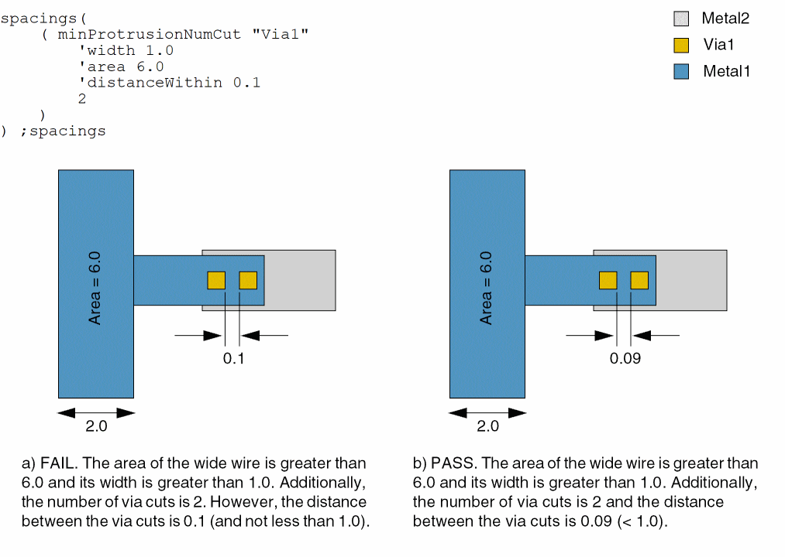

minProtrusionNumCut
spacings( ( minProtrusionNumCuttx_cutLayer['cutClass {f_width| (f_widthf_length) |t_name}] ['distancef_distance] 'widthf_width{'areaf_area['distancef_distance] | 'lengthf_length'distancef_distance} ['distanceWithinf_within] ['above | 'below]x_numCuts) ( minProtrusionNumCuttx_cutLayer(f_distance f_length f_widthx_numCuts) )
) ;spacings
Specifies the minimum number of cuts a via must have when the via is placed on a thin wire (protrusion) directly connected to a wide wire or pin.
Values
|
The cut layer on which the constraint is applied. Type: String (layer and purpose names) or Integer (layer number) |
|
|
The number of via cuts must be greater than or equal to this value. |
Parameters
|
The cut class to which the constraint applies, specified by width, by width and length, or by name (as defined in a cutClasses constraint). |
|
|
The constraint applies only if the distance of the first via cut (on the protrusion) from the wide wire is less than this value. |
|
|
The constraint applies only if the width of the wide wire is greater than this value. |
|
|
The constraint applies only if the length of the wide wire is greater than this value. |
|
|
The constraint applies only if the width of the wide wire is greater than width and the area of the island comprising the wide wire and the protrusion is greater than this value. If width is less than the width of the default routing wire and is specified along with area, the minimum number of cuts required on the routing vias varies based on the area of the routing wire on the layer. If only area and width are specified, only the thin wire connected to a wide wire is checked for the required number of via cuts. |
|
|
The distance between the via cuts must be less than this value for the via cuts to be counted. |
|
|
The metal layer to which the constraint applies. By default, the constraint applies to wires on the metal layers directly above and below the cut layer. |
|
Examples
- Example 1: minProtrusionNumCut with width, area, and distanceWithin
- Example 2: minProtrusionNumCut with distance, width, area, length, and distanceWithin
- Example 3: minProtrusionNumCut with distance, length, width
Example 1: minProtrusionNumCut with width, area, and distanceWithin
The minimum number of via cuts required on a protrusion from a wide wire is 2 if the following conditions are met:
- The width of the wide wire is greater than 1.0.
- The area of the island comprising the wide wire and the protrusion is greater than 6.0.
-
The distance between via cuts is less than 0.1.

Example 2: minProtrusionNumCut with distance, width, area, length, and distanceWithin
The minimum number of via cuts required on a protrusion from a wide wire is 2 if all of the following conditions are met:
- The distance of the first via cut (on the protrusion) from the wide wire is less than 0.5.
- The width of the wide wire is greater than 2.0.
- The length of the wide wire is greater than 3.0.
If all of the conditions listed above are met and the distance between via cuts is less than 0.3, the minimum number of via cuts required is also 2.
spacings(
( minProtrusionNumCut "cut1"
'distance 0.5
'width 2.0
'length 3.0
2
)
( minProtrusionNumCut "cut2"
'distance 0.5
'width 2.0
'length 3.0
'distanceWithin 0.3
2
)
) ;spacings
Example 3: minProtrusionNumCut with distance, length, width
This example shows an alternative way to use the minProtrusionNumCut constraint. The distance, length, and width are 0.1, 0.2, and 04, respectively, and the minimum number of via cuts is 4.
spacings(
( minProtrusionNumCut "cut1"
(0.1 0.2 0.4 4 )
)
) ;spacings
Return to top